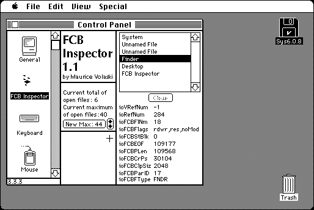

Download
FCB_Inspector_1.1.zip (16K) FCB Inspector 1.1 repackaged into a zipped hfs disk image and checksum file. The disk image can be mounted with Mini vMac.
FCB_Inspector_1.1.sit.hqx (20K) FCB Inspector 1.1 in the original format.
copyright: Maurice Volaski
mod date: Jun 28, 1995
license: freeware
from url :
Welcome to Flux Software
“Allows users to peek at a Macintosh’s list of open files. It also provides information about these files on demand and can close ones that aren't crucial to system operation. Finally, when using System 6, it allows the maximum number of open files to be changed”.

If you find these downloads useful, please consider helping the Gryphel Project, which hosts them.
Here are the md5 checksums for the downloads, signed with Gryphel Key 5:
--------- GRY SIGNED TEXT --------- 5162aa9140a1d8663833b719508fbe29 FCB_Inspector_1.1.zip 41b82b65c9b05558f833c08423c40b06 FCB_Inspector_1.1.sit.hqx ------- BEGIN GRY SIGNATURE ------- Gry/4Xa8CFcUzxdN/Pqog8dO5jA9luSix6j5k/w5zxiEqBF8JTMGNyzPpEclugay 8ezVSLX4xFu9OqiJ2sxY7MV7/Ggnxkdkwu8YiL8KX0B6vh49uUy4A791WERu5ulA wiAyDyBw2cp/vs5+G0bJMzmdSjbOg36fCGrB83XrvMTz6abE5X8KEXt4mGNGf/dQ -------- END GRY SIGNATURE --------